SGenAxis 全頁面 UI 設計
14 個頁面 · 8 個共用對話框 · 70 種頁面狀態定義 · 56 項 UI 驗收案例
延續已選定的深色工作站視覺：固定選單與專案列、左侧資源／功能導覽、中央工作區、右側 Inspector、底部執行列。產品框架仍為 Electron + React + TypeScript；本交付是設計文件，不是產品程式。
所有視覺稿都是示範狀態，不代表真實執行、核准或測試結果。圖中文字或連線若與 schema 有差異，以 schema 與原產品 Contract 為準。新增 UI 行為仍待設計審查，未自動批准架構。
專案管理
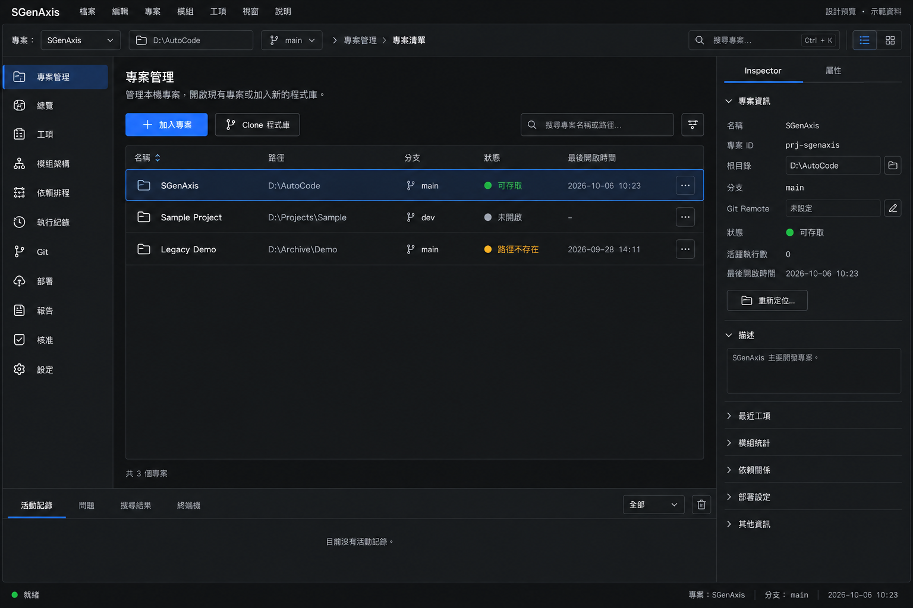
UI-02專案總覽
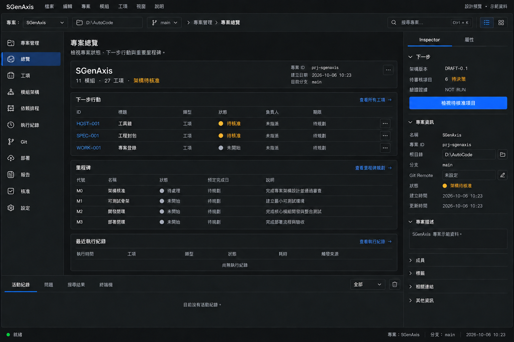
UI-03工項工作台
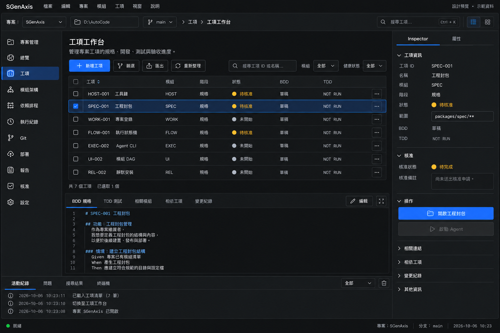
UI-04模組架構 DAG
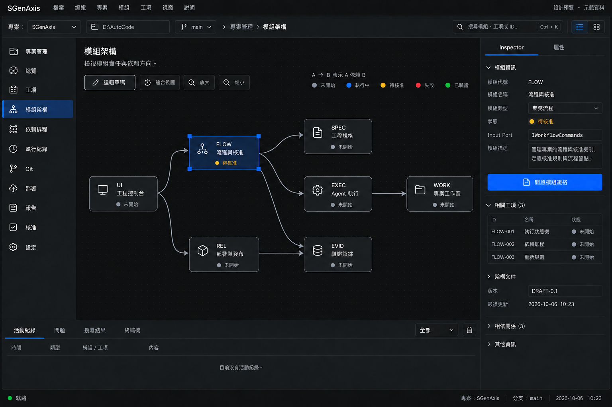
UI-05工項工程封包
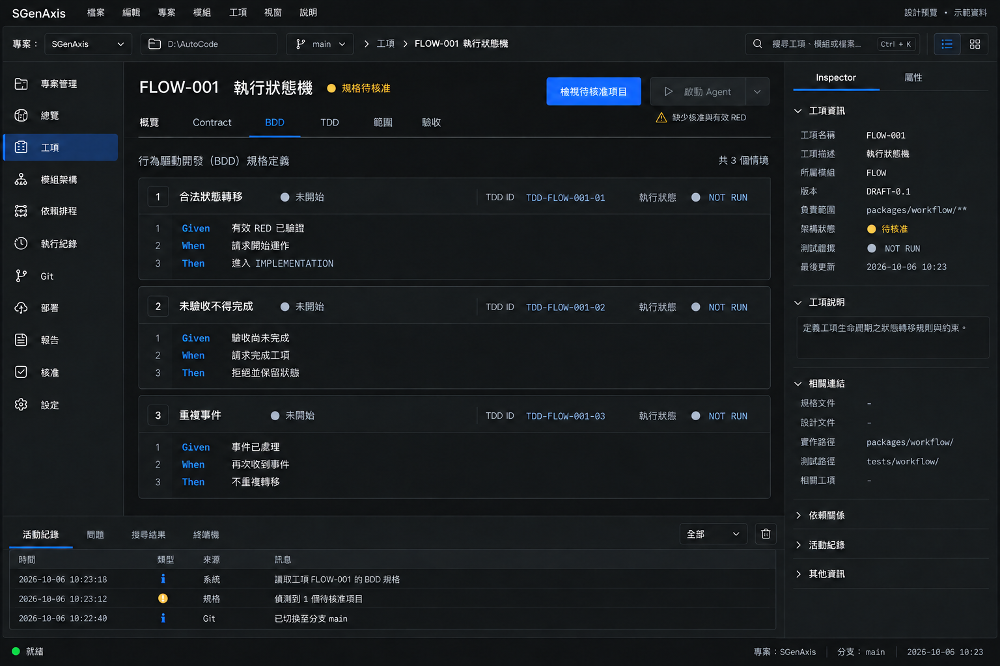
UI-06工項依賴排程
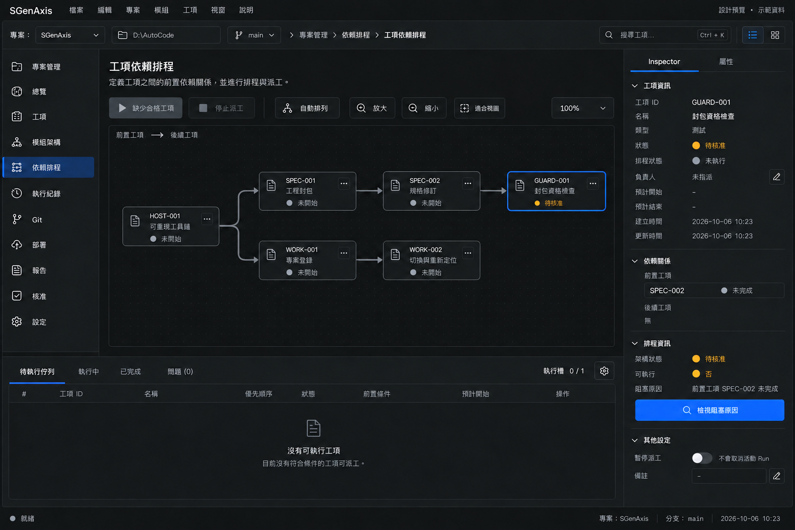
UI-07Agent 執行與證據
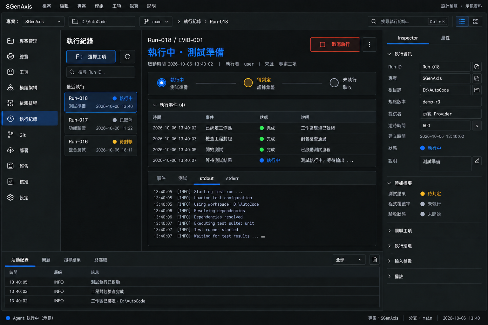
UI-08Git 版本控管
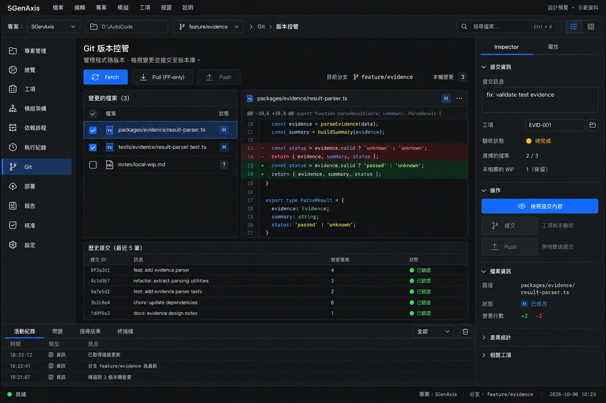
UI-09部署設定與產物
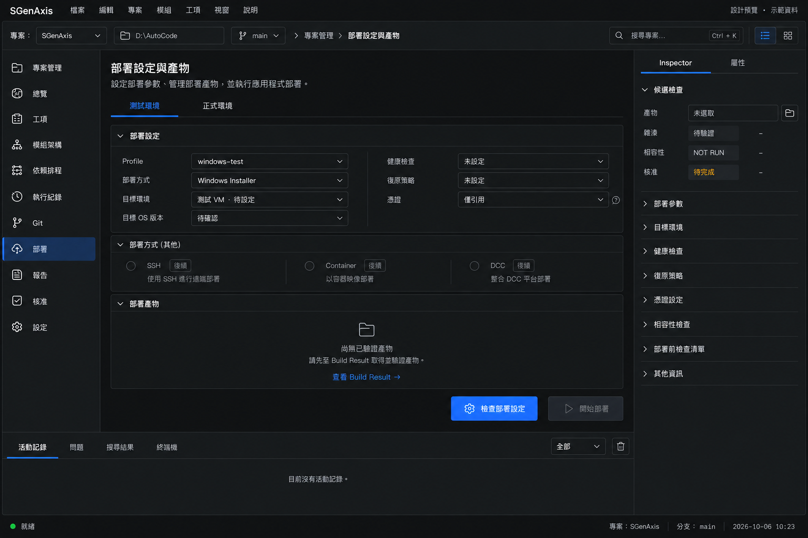
UI-10部署執行與復原
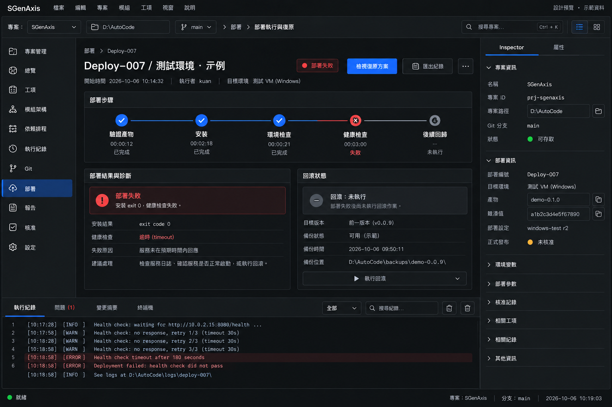
UI-11模組報告與里程碑
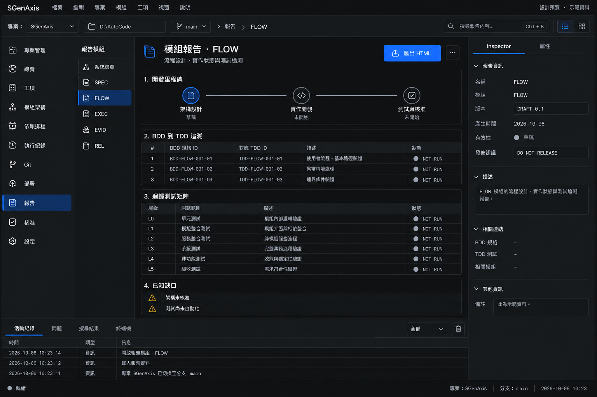
UI-12環境與 Agent 設定
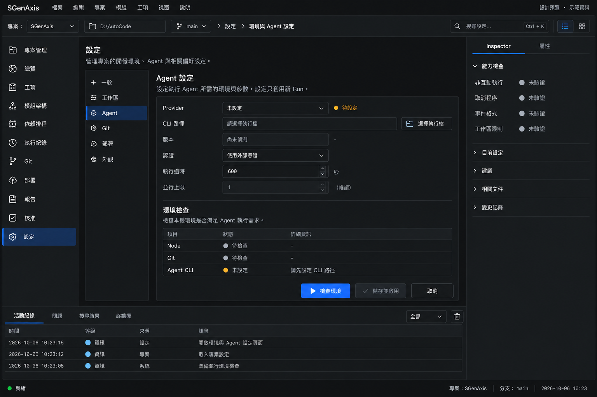
UI-13核准與重新規劃
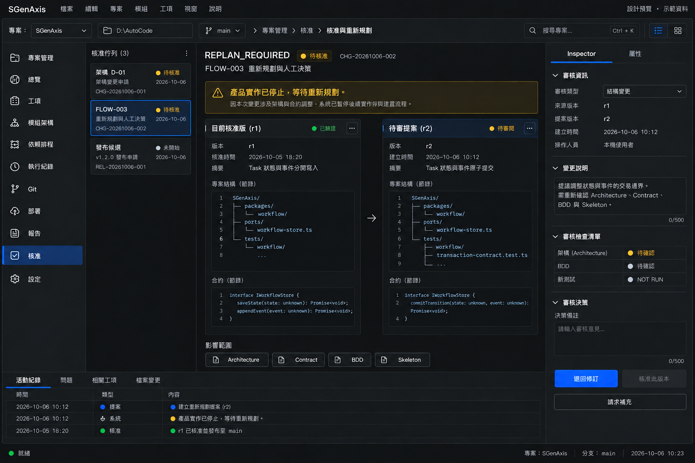
UI-14模組規格與修訂
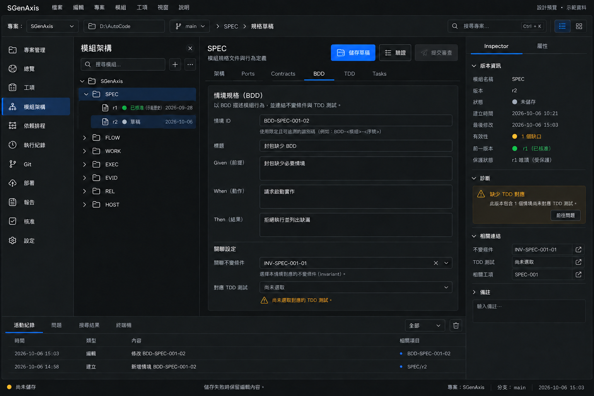
共用設計系統
| Token | 值 |
|---|---|
| background | #101112 |
| panel | #1b1d1f |
| panelRaised | #23262a |
| border | #34383e |
| text | #eef0f3 |
| muted | #aeb5bf |
| blue | #246bff |
| gray | #a4adba |
| running | #56a8ff |
| attention | #f2b544 |
| failed | #f07979 |
| complete | #5bc98b |
| font | Segoe UI / Microsoft JhengHei |
| mono | Cascadia Code / Consolas |
| body_px | 14 |
| secondary_px | 12 |
| heading_px | 18 |
| control_height_px | 32 |
| radius_px | 4 |
| spacing_px | [4, 8, 12, 16, 24] |
| reference_canvas | [1536, 1024] |
| min_window | [1024, 720] |
狀態語意
灰：未開始；藍：執行中；黃：待核准／待對帳／證據過期；紅：非預期失敗／阻塞；綠：必要驗證與驗收完成。TDD RED 是開發階段，不能把「缺測試」或「未核准」寫成 RED。產品發布資格獨立判定。
尺寸與可及性
1536×1024 為視覺基準；1280×800 收窄 Inspector 並允許頁內捲動；1024×720 將 Inspector 改為可開關側抽屜，不縮小文字硬塞。低於此尺寸提示擴大桌面視窗；本期不設計手機操作產品。所有按鈕有語意標籤與鍵盤焦點；Tab 切換、Escape 關閉非破壞性對話框並歸還焦點；狀態用文字與圖示雙重表達。色彩對比須在實作時實測 WCAG AA，圖片不構成可及性通過證據。
導覽及資料綁定
route 為邏輯導覽識別，不是已存在的 URL API。Project ID、Task ID、spec revision 保留於頁面上下文；專案切換清除視圖快取並重新載入，執行中的 Run 維持原绑定。使用者在 dirty 草稿離頁時顯示 DLG-08。
專案管理 設計提案
選擇或匯入正確資料夾並進入專案。
UI Schema、欄位與操作
左側最近專案與新增入口；中央以表格呈現專案名稱、完整路徑、Git 分支、活動執行數與存取狀態；右側 Inspector 顯示選中專案的身分、root 與重新定位。
| 控制項 | 預設 | 驗證與互動 |
|---|---|---|
| 專案名稱 | SGenAxis | 顯示名稱不可空白；Project ID 才是身分 |
| 工作目錄 | D:\AutoCode | 驗證存在、權限及實體路徑去重 |
| 匯入方式 | 本機資料夾 | 本機開啟／Git Clone／空目錄初始化 |
| 重新定位 | 停用於活動租約 | 驗證新目錄身分；保留歷史 root |
主要動作：開啟專案 → UI-02；沒有專案時改為「加入專案」。
Owner：WORK, GIT
下一頁：
空白、載入、錯誤、停用與過期狀態
| 狀態 | 可見內容與處置 |
|---|---|
| empty | 尚無專案，顯示選擇資料夾與 Clone 入口 |
| loading | 只鎖定正在探測的列，不清掉其他專案 |
| error | 路徑不存在／拒絕存取，顯示重新定位；不登錄半成品 |
| disabled | 有活動 Run 時停用重新定位並連結該 Run |
| stale | 路徑搬移後舊證據顯示待核對 |
BDD／TDD 追溯與 UI 驗收
| 產品工項 | 既有規格 |
|---|---|
| WORK-001 | 專案登錄與資料夾驗證 |
| WORK-002 | 切換、租約與重新定位 |
| GIT-001 | Clone、Init 與程式庫摘要 |
| BDD | TDD | 目前結果 |
|---|---|---|
| BDD-WORK-001-01 | TDD-WORK-001-01 | NOT RUN |
| BDD-WORK-001-02 | TDD-WORK-001-02 | NOT RUN |
| BDD-WORK-001-03 | TDD-WORK-001-03 | NOT RUN |
| BDD-WORK-002-01 | TDD-WORK-002-01 | NOT RUN |
| BDD-WORK-002-02 | TDD-WORK-002-02 | NOT RUN |
| BDD-WORK-002-03 | TDD-WORK-002-03 | NOT RUN |
| BDD-GIT-001-01 | TDD-GIT-001-01 | NOT RUN |
| BDD-GIT-001-02 | TDD-GIT-001-02 | NOT RUN |
| BDD-GIT-001-03 | TDD-GIT-001-03 | NOT RUN |
| UI case | 可量測斷言 | 狀態 |
|---|---|---|
| UIT-UI-01-01 | 可由固定導覽抵達並看清目前 project/root | PLANNED / NOT RUN |
| UIT-UI-01-02 | 主要動作在資格不足時停用且有文字原因 | PLANNED / NOT RUN |
| UIT-UI-01-03 | empty/loading/error/disabled/stale 均有明確處置 | PLANNED / NOT RUN |
| UIT-UI-01-04 | 鍵盤可操作；狀態不只靠顏色；長路徑可查看完整內容 | PLANNED / NOT RUN |
UI cases 是補充設計提案；其餘引用原封包，不改變既有測試期待。
專案總覽 設計提案
快速辨識下一個需要處理的工項及核准項目。
UI Schema、欄位與操作
緊湊專案摘要列，中央待處理工項清單及里程碑進度；下方最近執行；右 Inspector 顯示目前工作區、分支與所選工項下一步。避免裝飾性統計卡。
| 控制項 | 預設 | 驗證與互動 |
|---|---|---|
| 範圍 | 目前專案 | 摘要只計入目前 project ID |
| 里程碑 | 全部 | M0–M4；只讀目前規畫 |
| 健康摘要 | 未评估／待核准 | 缺測試與零工項不可顯示綠燈 |
主要動作：檢視待核准項目 → UI-13。
Owner：UI, FLOW
下一頁：
空白、載入、錯誤、停用與過期狀態
| 狀態 | 可見內容與處置 |
|---|---|
| empty | 新專案未建立規格，導向 UI-14 |
| loading | 保留頁面骨架並標記載入來源 |
| error | 載入失敗清除舊專案內容並提供重試 |
| disabled | 沒有合格 Task 時停用啟動 Agent |
| stale | 過期證據計入待處理，不沿用完成數 |
BDD／TDD 追溯與 UI 驗收
| 產品工項 | 既有規格 |
|---|---|
| UI-001 | 專案切換與狀態看板 |
| FLOW-001 | 執行狀態機與核准閘門 |
| BDD | TDD | 目前結果 |
|---|---|---|
| BDD-UI-001-01 | TDD-UI-001-01 | NOT RUN |
| BDD-UI-001-02 | TDD-UI-001-02 | NOT RUN |
| BDD-UI-001-03 | TDD-UI-001-03 | NOT RUN |
| BDD-FLOW-001-01 | TDD-FLOW-001-01 | NOT RUN |
| BDD-FLOW-001-02 | TDD-FLOW-001-02 | NOT RUN |
| BDD-FLOW-001-03 | TDD-FLOW-001-03 | NOT RUN |
| UI case | 可量測斷言 | 狀態 |
|---|---|---|
| UIT-UI-02-01 | 可由固定導覽抵達並看清目前 project/root | PLANNED / NOT RUN |
| UIT-UI-02-02 | 主要動作在資格不足時停用且有文字原因 | PLANNED / NOT RUN |
| UIT-UI-02-03 | empty/loading/error/disabled/stale 均有明確處置 | PLANNED / NOT RUN |
| UIT-UI-02-04 | 鍵盤可操作；狀態不只靠顏色；長路徑可查看完整內容 | PLANNED / NOT RUN |
UI cases 是補充設計提案；其餘引用原封包，不改變既有測試期待。
工項工作台 設計提案
搜尋、篩選並選取要審閱或執行的 Task。
UI Schema、欄位與操作
中央表格：ID、標題、模組、階段、健康、BDD、TDD；選中列藍色；右側工項 Inspector；底部封包摘要與執行入口。
| 控制項 | 預設 | 驗證與互動 |
|---|---|---|
| 搜尋 | 空字串 | ID／標題／模組文字，不觸發狀態變更 |
| 模組／階段／健康 | 全部 | 可清除篩選；健康與階段分開 |
| 排序 | 工項 ID | 穩定排序；排序不影響排程 |
| 選中工項 | 無 | 只啟動單項；第一版並行上限 1 |
主要動作：開啟工程封包 → UI-05；啟動資格不足則只顯示缺口。
Owner：UI, FLOW
下一頁：
空白、載入、錯誤、停用與過期狀態
| 狀態 | 可見內容與處置 |
|---|---|
| empty | 無符合工項，提供清除篩選 |
| loading | 表格 skeleton；保留搜尋條件 |
| error | 載入失敗顯示目前 project ID 與重試 |
| disabled | 封包不完整／未核准／無有效 RED 時禁止產品實作 |
| stale | 封包改版後重新載入，舊選取不沿用批准 |
BDD／TDD 追溯與 UI 驗收
| 產品工項 | 既有規格 |
|---|---|
| UI-001 | 專案切換與狀態看板 |
| UI-003 | BDD/TDD 工程封包與執行詳情 |
| FLOW-001 | 執行狀態機與核准閘門 |
| BDD | TDD | 目前結果 |
|---|---|---|
| BDD-UI-001-01 | TDD-UI-001-01 | NOT RUN |
| BDD-UI-001-02 | TDD-UI-001-02 | NOT RUN |
| BDD-UI-001-03 | TDD-UI-001-03 | NOT RUN |
| BDD-UI-003-01 | TDD-UI-003-01 | NOT RUN |
| BDD-UI-003-02 | TDD-UI-003-02 | NOT RUN |
| BDD-UI-003-03 | TDD-UI-003-03 | NOT RUN |
| BDD-FLOW-001-01 | TDD-FLOW-001-01 | NOT RUN |
| BDD-FLOW-001-02 | TDD-FLOW-001-02 | NOT RUN |
| BDD-FLOW-001-03 | TDD-FLOW-001-03 | NOT RUN |
| UI case | 可量測斷言 | 狀態 |
|---|---|---|
| UIT-UI-03-01 | 可由固定導覽抵達並看清目前 project/root | PLANNED / NOT RUN |
| UIT-UI-03-02 | 主要動作在資格不足時停用且有文字原因 | PLANNED / NOT RUN |
| UIT-UI-03-03 | empty/loading/error/disabled/stale 均有明確處置 | PLANNED / NOT RUN |
| UIT-UI-03-04 | 鍵盤可操作；狀態不只靠顏色；長路徑可查看完整內容 | PLANNED / NOT RUN |
UI cases 是補充設計提案；其餘引用原封包，不改變既有測試期待。
模組架構 DAG 設計提案
理解模組責任、依賴方向與受影響模組。
UI Schema、欄位與操作
點陣畫布為主；左模組樹；節點顯示責任與健康；右側 Ports、Contracts、所屬 Tasks；畫布下方縮放、適應與表格替代入口。
| 控制項 | 預設 | 驗證與互動 |
|---|---|---|
| 架構版本 | DRAFT-0.1 | 已核准版本唯讀；變更建立新草稿 |
| 選取／平移／縮放 | 選取／100% | 視圖座標不改工程依賴 |
| 依賴方向 | A → B = A 依賴 B | 不可與 Task 前置執行箭頭混用 |
| 節點連線 | 唯讀 | 只有草稿編輯可提議連線；循環禁止核准 |
主要動作：開啟所選模組規格 → UI-14。
Owner：UI, SPEC
下一頁：
空白、載入、錯誤、停用與過期狀態
| 狀態 | 可見內容與處置 |
|---|---|
| empty | 尚無模組，導向建立規格 |
| loading | 畫布載入時不暫時顯示錯誤架構 |
| error | 循環顯示完整路徑及紅色問題邊，停止核准 |
| disabled | 唯讀版本停用新增／刪除依賴 |
| stale | 來源版本更新時顯示重新載入提示 |
BDD／TDD 追溯與 UI 驗收
| 產品工項 | 既有規格 |
|---|---|
| UI-002 | 互動式模組架構 DAG |
| SPEC-002 | 規格修訂與核准鎖定 |
| BDD | TDD | 目前結果 |
|---|---|---|
| BDD-UI-002-01 | TDD-UI-002-01 | NOT RUN |
| BDD-UI-002-02 | TDD-UI-002-02 | NOT RUN |
| BDD-UI-002-03 | TDD-UI-002-03 | NOT RUN |
| BDD-SPEC-002-01 | TDD-SPEC-002-01 | NOT RUN |
| BDD-SPEC-002-02 | TDD-SPEC-002-02 | NOT RUN |
| BDD-SPEC-002-03 | TDD-SPEC-002-03 | NOT RUN |
| UI case | 可量測斷言 | 狀態 |
|---|---|---|
| UIT-UI-04-01 | 可由固定導覽抵達並看清目前 project/root | PLANNED / NOT RUN |
| UIT-UI-04-02 | 主要動作在資格不足時停用且有文字原因 | PLANNED / NOT RUN |
| UIT-UI-04-03 | empty/loading/error/disabled/stale 均有明確處置 | PLANNED / NOT RUN |
| UIT-UI-04-04 | 鍵盤可操作；狀態不只靠顏色；長路徑可查看完整內容 | PLANNED / NOT RUN |
UI cases 是補充設計提案；其餘引用原封包，不改變既有測試期待。
工項工程封包 設計提案
完整查看 Agent 可執行的 BDD、TDD、範圍與驗收。
UI Schema、欄位與操作
左模組／Task 樹；中央文件分頁：概覽、Contract、BDD、TDD、範圍、驗收；右 Inspector 顯示規格 hash、核准、前置與啟動資格；底部執行控制。
| 控制項 | 預設 | 驗證與互動 |
|---|---|---|
| 工項 | FLOW-001 | primary module 唯一；ID 不可就地變更 |
| BDD 分頁 | Given / When / Then | 顯示 scenario ID、Invariant、TDD 映射 |
| TDD 分頁 | NOT RUN | 前置、fixture、操作、斷言、RED 判準與命令全部可讀 |
| 允許範圍 | packages/workflow/** | 保護範圍明列；不得只靠檔案白名單跨模組 |
| 啟動模式 | 依狀態決定 | 測試準備與產品實作資格分開；不能無 RED 實作 |
主要動作：檢視待核准項目 → UI-13；合格封包可開啟啟動確認。
Owner：UI, SPEC, EVID
下一頁：
空白、載入、錯誤、停用與過期狀態
| 狀態 | 可見內容與處置 |
|---|---|
| empty | 封包缺欄位，逐項列缺口而非空白 |
| loading | 只載入指定 task/spec hash |
| error | 追溯斷鏈顯示缺失 ID 與修訂入口 |
| disabled | 未批准／版本過期時停用啟動 |
| stale | 使用者讀取後規格改版，啟動拒絕並要求重閱 |
BDD／TDD 追溯與 UI 驗收
| 產品工項 | 既有規格 |
|---|---|
| UI-003 | BDD/TDD 工程封包與執行詳情 |
| SPEC-002 | 規格修訂與核准鎖定 |
| GUARD-001 | 封包資格與範圍檢查 |
| BDD | TDD | 目前結果 |
|---|---|---|
| BDD-UI-003-01 | TDD-UI-003-01 | NOT RUN |
| BDD-UI-003-02 | TDD-UI-003-02 | NOT RUN |
| BDD-UI-003-03 | TDD-UI-003-03 | NOT RUN |
| BDD-SPEC-002-01 | TDD-SPEC-002-01 | NOT RUN |
| BDD-SPEC-002-02 | TDD-SPEC-002-02 | NOT RUN |
| BDD-SPEC-002-03 | TDD-SPEC-002-03 | NOT RUN |
| BDD-GUARD-001-01 | TDD-GUARD-001-01 | NOT RUN |
| BDD-GUARD-001-02 | TDD-GUARD-001-02 | NOT RUN |
| BDD-GUARD-001-03 | TDD-GUARD-001-03 | NOT RUN |
| UI case | 可量測斷言 | 狀態 |
|---|---|---|
| UIT-UI-05-01 | 可由固定導覽抵達並看清目前 project/root | PLANNED / NOT RUN |
| UIT-UI-05-02 | 主要動作在資格不足時停用且有文字原因 | PLANNED / NOT RUN |
| UIT-UI-05-03 | empty/loading/error/disabled/stale 均有明確處置 | PLANNED / NOT RUN |
| UIT-UI-05-04 | 鍵盤可操作；狀態不只靠顏色；長路徑可查看完整內容 | PLANNED / NOT RUN |
UI cases 是補充設計提案；其餘引用原封包，不改變既有測試期待。
工項依賴排程 設計提案
看清哪些 Task 可以排程，哪些被前置工項阻塞。
UI Schema、欄位與操作
中央工項 DAG／佇列雙視圖，箭頭前置→後續；右側依賴原因、全域閘門與下一個候選；底部一個 Agent slot。
| 控制項 | 預設 | 驗證與互動 |
|---|---|---|
| 視圖 | 工項依賴 | 清楚區別架構依賴頁 |
| 執行上限 | 1 | 首版唯讀；不暗示多 Agent 功能已支援 |
| 候選 | 由前置與閘門計算 | Task DAG 完成不足以略過里程碑 |
| 暫停派工 | 關閉 | 只停止派出新工項，不取消活動 Run |
主要動作：檢查下一個工項 → UI-05。
Owner：FLOW, UI
下一頁：
空白、載入、錯誤、停用與過期狀態
| 狀態 | 可見內容與處置 |
|---|---|
| empty | 沒有可排程工項，列出阻塞原因 |
| loading | 載入依賴圖時停止新的派工 |
| error | 循環完整路徑可讀並禁止派工 |
| disabled | slot 被佔用或必要閘門未完成時不派工 |
| stale | 前置版本變更，重新計算而不沿用資格 |
BDD／TDD 追溯與 UI 驗收
| 產品工項 | 既有規格 |
|---|---|
| FLOW-002 | 依賴排程與失敗停止 |
| BDD | TDD | 目前結果 |
|---|---|---|
| BDD-FLOW-002-01 | TDD-FLOW-002-01 | NOT RUN |
| BDD-FLOW-002-02 | TDD-FLOW-002-02 | NOT RUN |
| BDD-FLOW-002-03 | TDD-FLOW-002-03 | NOT RUN |
| UI case | 可量測斷言 | 狀態 |
|---|---|---|
| UIT-UI-06-01 | 可由固定導覽抵達並看清目前 project/root | PLANNED / NOT RUN |
| UIT-UI-06-02 | 主要動作在資格不足時停用且有文字原因 | PLANNED / NOT RUN |
| UIT-UI-06-03 | empty/loading/error/disabled/stale 均有明確處置 | PLANNED / NOT RUN |
| UIT-UI-06-04 | 鍵盤可操作；狀態不只靠顏色；長路徑可查看完整內容 | PLANNED / NOT RUN |
UI cases 是補充設計提案；其餘引用原封包，不改變既有測試期待。
Agent 執行與證據 設計提案
監看特定 Run，查閱測試證據並安全取消或對帳。
UI Schema、欄位與操作
左 Run 歷史；中央事件時間軸與 log 分頁，底部測試結果；右綁定 project/root/spec/commit、provider、階段及逾時；取消是唯一執行期主要動作。
| 控制項 | 預設 | 驗證與互動 |
|---|---|---|
| Run 綁定 | 建立時固定 | UI 切專案不改 Run root |
| 輸出分頁 | 事件 | 事件／測試／stdout／stderr；敏感資料脫敏 |
| 跟隨最新 | 開啟 | 使用者捲動閱讀時暫停；不搶焦點 |
| 取消 | 僅活動 Run 可用 | 要求終止程序樹；取消中不先宣告已停止 |
| 重啟對帳 | 未知效果時顯示 | 禁止盲目重送具副作用命令 |
主要動作：活動 Run：「取消執行」；中斷 Run：「檢視對帳項目」。
Owner：EXEC, EVID
下一頁：
空白、載入、錯誤、停用與過期狀態
| 狀態 | 可見內容與處置 |
|---|---|
| empty | 尚無執行紀錄，導向工項封包 |
| loading | 訂閱時顯示連線中，不重複啟動 Run |
| error | provider/認證/格式錯誤分類，顯示脫敏診斷 |
| disabled | 非活動 Run 停用取消；未知效果停用重跑 |
| stale | 證據與目前 spec/tree 不符時標過期 |
BDD／TDD 追溯與 UI 驗收
| 產品工項 | 既有規格 |
|---|---|
| EXEC-001 | Agent Provider 邊界與模擬執行 |
| EXEC-002 | 首個真實 Agent CLI Adapter |
| EXEC-003 | 取消、逾時與重啟對帳 |
| EVID-001 | 測試 Runner 與有效 RED |
| BDD | TDD | 目前結果 |
|---|---|---|
| BDD-EXEC-001-01 | TDD-EXEC-001-01 | NOT RUN |
| BDD-EXEC-001-02 | TDD-EXEC-001-02 | NOT RUN |
| BDD-EXEC-001-03 | TDD-EXEC-001-03 | NOT RUN |
| BDD-EXEC-002-01 | TDD-EXEC-002-01 | NOT RUN |
| BDD-EXEC-002-02 | TDD-EXEC-002-02 | NOT RUN |
| BDD-EXEC-002-03 | TDD-EXEC-002-03 | NOT RUN |
| BDD-EXEC-003-01 | TDD-EXEC-003-01 | NOT RUN |
| BDD-EXEC-003-02 | TDD-EXEC-003-02 | NOT RUN |
| BDD-EXEC-003-03 | TDD-EXEC-003-03 | NOT RUN |
| BDD-EVID-001-01 | TDD-EVID-001-01 | NOT RUN |
| BDD-EVID-001-02 | TDD-EVID-001-02 | NOT RUN |
| BDD-EVID-001-03 | TDD-EVID-001-03 | NOT RUN |
| UI case | 可量測斷言 | 狀態 |
|---|---|---|
| UIT-UI-07-01 | 可由固定導覽抵達並看清目前 project/root | PLANNED / NOT RUN |
| UIT-UI-07-02 | 主要動作在資格不足時停用且有文字原因 | PLANNED / NOT RUN |
| UIT-UI-07-03 | empty/loading/error/disabled/stale 均有明確處置 | PLANNED / NOT RUN |
| UIT-UI-07-04 | 鍵盤可操作；狀態不只靠顏色；長路徑可查看完整內容 | PLANNED / NOT RUN |
UI cases 是補充設計提案；其餘引用原封包，不改變既有測試期待。
Git 版本控管 設計提案
檢視差異，保護既有工作並提交已驗收的工項。
UI Schema、欄位與操作
左分支／remote／提交歷史；中央可勾選檔案列表與 split diff；右 commit message、Task/驗收、選取摘要；頂部 Fetch/Pull/Push；底部結果。
| 控制項 | 預設 | 驗證與互動 |
|---|---|---|
| remote／branch | 目前程式庫 | repo 變更先確認 lease |
| 檔案選取 | 全部不選 | 只提交選定且核准 scope；保留其他 WIP |
| Commit message | 空 | 不可空白；需要 Task 與驗收 |
| Pull 策略 | FF-only | dirty/untracked/diverged 必須檢查 |
| Push | 手動 | 只上傳 commit；無自動 force |
主要動作：檢視提交內容 → commit 確認；Push 是獨立後續操作。
Owner：GIT, WORK
下一頁：
空白、載入、錯誤、停用與過期狀態
| 狀態 | 可見內容與處置 |
|---|---|
| empty | 非 Git 專案提供初始化；乾淨目錄顯示無變更 |
| loading | Fetch 不封鎖只讀 diff；變更操作序列化 |
| error | 分歧／衝突／認證被拒明示且保留本機內容 |
| disabled | 活動 Run 禁切分支/Pull；無驗收禁 Commit |
| stale | HEAD/tree 改變後刷新 diff 並清除過期提交確認 |
BDD／TDD 追溯與 UI 驗收
| 產品工項 | 既有規格 |
|---|---|
| GIT-001 | Clone、Init 與程式庫摘要 |
| GIT-002 | Fetch、安全 Pull 與分支切換 |
| GIT-003 | 審核式 Commit 與 Push |
| BDD | TDD | 目前結果 |
|---|---|---|
| BDD-GIT-001-01 | TDD-GIT-001-01 | NOT RUN |
| BDD-GIT-001-02 | TDD-GIT-001-02 | NOT RUN |
| BDD-GIT-001-03 | TDD-GIT-001-03 | NOT RUN |
| BDD-GIT-002-01 | TDD-GIT-002-01 | NOT RUN |
| BDD-GIT-002-02 | TDD-GIT-002-02 | NOT RUN |
| BDD-GIT-002-03 | TDD-GIT-002-03 | NOT RUN |
| BDD-GIT-003-01 | TDD-GIT-003-01 | NOT RUN |
| BDD-GIT-003-02 | TDD-GIT-003-02 | NOT RUN |
| BDD-GIT-003-03 | TDD-GIT-003-03 | NOT RUN |
| UI case | 可量測斷言 | 狀態 |
|---|---|---|
| UIT-UI-08-01 | 可由固定導覽抵達並看清目前 project/root | PLANNED / NOT RUN |
| UIT-UI-08-02 | 主要動作在資格不足時停用且有文字原因 | PLANNED / NOT RUN |
| UIT-UI-08-03 | empty/loading/error/disabled/stale 均有明確處置 | PLANNED / NOT RUN |
| UIT-UI-08-04 | 鍵盤可操作；狀態不只靠顏色；長路徑可查看完整內容 | PLANNED / NOT RUN |
UI cases 是補充設計提案；其餘引用原封包，不改變既有測試期待。
部署設定與產物 設計提案
選定部署方式、環境、版本與同一份已驗證產物。
UI Schema、欄位與操作
左 Profiles 測試／正式；中央表單與不可變 artifact 列表；右版本與 gate 檢查；底部準備測試部署。未支援 Adapter 呈現停用。
| 控制項 | 預設 | 驗證與互動 |
|---|---|---|
| Profile | 測試環境 | 名稱、revision、target 明確 |
| 部署方式 | Windows Installer | SSH/Container/DCC 標後續規畫並停用 |
| Artifact | 未選取 | commit、hash、build result 完整；禁止直接輸入假產物 |
| 健康／復原策略 | 必填 | 缺任一則不允許候選 |
| Secret | 引用名稱 | 不顯示實際 token；不存入 profile 明文 |
主要動作：驗證部署候選；合格後「準備測試部署」。
Owner：REL
下一頁：
空白、載入、錯誤、停用與過期狀態
| 狀態 | 可見內容與處置 |
|---|---|
| empty | 無產物時提供查看 Build Result 入口，不偽造候選 |
| loading | hash 驗證中禁止啟動 |
| error | hash/profile 無效逐欄顯示；不更動目標環境 |
| disabled | 缺平台版本、健康檢查或復原聲明則停用部署 |
| stale | profile 或產物改版使原批准失效 |
BDD／TDD 追溯與 UI 驗收
| 產品工項 | 既有規格 |
|---|---|
| REL-001 | 部署設定與版本產物追溯 |
| REL-002 | Windows 打包與靜默安裝驗證 |
| BDD | TDD | 目前結果 |
|---|---|---|
| BDD-REL-001-01 | TDD-REL-001-01 | NOT RUN |
| BDD-REL-001-02 | TDD-REL-001-02 | NOT RUN |
| BDD-REL-001-03 | TDD-REL-001-03 | NOT RUN |
| BDD-REL-002-01 | TDD-REL-002-01 | NOT RUN |
| BDD-REL-002-02 | TDD-REL-002-02 | NOT RUN |
| BDD-REL-002-03 | TDD-REL-002-03 | NOT RUN |
| UI case | 可量測斷言 | 狀態 |
|---|---|---|
| UIT-UI-09-01 | 可由固定導覽抵達並看清目前 project/root | PLANNED / NOT RUN |
| UIT-UI-09-02 | 主要動作在資格不足時停用且有文字原因 | PLANNED / NOT RUN |
| UIT-UI-09-03 | empty/loading/error/disabled/stale 均有明確處置 | PLANNED / NOT RUN |
| UIT-UI-09-04 | 鍵盤可操作；狀態不只靠顏色；長路徑可查看完整內容 | PLANNED / NOT RUN |
UI cases 是補充設計提案；其餘引用原封包，不改變既有測試期待。
部署執行與復原 設計提案
查看部署步驟、健康結果及回滾的實際狀態。
UI Schema、欄位與操作
左部署歷史；中央步驟時間軸：驗證→安裝→環境→健康→回歸；下方 log；右目標、artifact hash、profile revision、核准與復原結果。
| 控制項 | 預設 | 驗證與互動 |
|---|---|---|
| 部署綁定 | 唯讀 | 環境、commit、hash、profile 固定 |
| 結果 | NOT RUN／RUNNING／PASS／FAIL | exit 0 不覆蓋 health fail |
| 回滾 | 依 profile | 可逆與不可逆步驟分別列出 |
| 人工復原 | 必要時展開 | 保留實際環境狀態及處置記錄 |
主要動作：失敗時「檢視復原方案」；未核准正式發布時導向 UI-13。
Owner：REL
下一頁：
空白、載入、錯誤、停用與過期狀態
| 狀態 | 可見內容與處置 |
|---|---|
| empty | 無部署紀錄，回 UI-09 建立候選 |
| loading | 步驟事件即時追加；未知步驟不先標成功 |
| error | 部署 FAIL 與回滾 FAIL 分開顯示 |
| disabled | 無適用策略時回滾停用，顯示人工復原 |
| stale | 版本不符禁止重用舊核准與產物 |
BDD／TDD 追溯與 UI 驗收
| 產品工項 | 既有規格 |
|---|---|
| REL-002 | Windows 打包與靜默安裝驗證 |
| REL-003 | 發布核准、健康檢查與回滾 |
| BDD | TDD | 目前結果 |
|---|---|---|
| BDD-REL-002-01 | TDD-REL-002-01 | NOT RUN |
| BDD-REL-002-02 | TDD-REL-002-02 | NOT RUN |
| BDD-REL-002-03 | TDD-REL-002-03 | NOT RUN |
| BDD-REL-003-01 | TDD-REL-003-01 | NOT RUN |
| BDD-REL-003-02 | TDD-REL-003-02 | NOT RUN |
| BDD-REL-003-03 | TDD-REL-003-03 | NOT RUN |
| UI case | 可量測斷言 | 狀態 |
|---|---|---|
| UIT-UI-10-01 | 可由固定導覽抵達並看清目前 project/root | PLANNED / NOT RUN |
| UIT-UI-10-02 | 主要動作在資格不足時停用且有文字原因 | PLANNED / NOT RUN |
| UIT-UI-10-03 | empty/loading/error/disabled/stale 均有明確處置 | PLANNED / NOT RUN |
| UIT-UI-10-04 | 鍵盤可操作；狀態不只靠顏色；長路徑可查看完整內容 | PLANNED / NOT RUN |
UI cases 是補充設計提案；其餘引用原封包，不改變既有測試期待。
模組報告與里程碑 設計提案
閱讀模組責任、BDD/TDD 證據、回歸與發布缺口。
UI Schema、欄位與操作
左模組／里程碑目錄；中央可讀報告與追溯表；右來源版本、生成時間、過期狀態與匯出；用結果表取代不明百分比。
| 控制項 | 預設 | 驗證與互動 |
|---|---|---|
| 報告範圍 | 目前專案／模組 | system 與 module 可切換 |
| 證據版本 | 最新符合版本 | NOT RUN/skip/unknown 不計已驗證 |
| 匯出 | HTML | 含結構 JSON 與來源指紋；離線可讀 |
| 發布資格 | DO NOT RELEASE | 不能由單一測試數量推導 |
主要動作：產生／匯出 HTML 報告。
Owner：REPORT, EVID
下一頁：
空白、載入、錯誤、停用與過期狀態
| 狀態 | 可見內容與處置 |
|---|---|
| empty | 尚無測試，完整顯示 NOT RUN |
| loading | 生成中保留上一份報告並標為舊版 |
| error | 來源缺失報錯，不覆寫上一份有效文件 |
| disabled | 來源不完整時不能生成宣稱完整報告 |
| stale | 版本改變顯示過期並要求重生成 |
BDD／TDD 追溯與 UI 驗收
| 產品工項 | 既有規格 |
|---|---|
| REPORT-001 | 統一模組 HTML 與系統總覽 |
| EVID-002 | 證據失效與模組覆蓋 |
| BDD | TDD | 目前結果 |
|---|---|---|
| BDD-REPORT-001-01 | TDD-REPORT-001-01 | NOT RUN |
| BDD-REPORT-001-02 | TDD-REPORT-001-02 | NOT RUN |
| BDD-REPORT-001-03 | TDD-REPORT-001-03 | NOT RUN |
| BDD-EVID-002-01 | TDD-EVID-002-01 | NOT RUN |
| BDD-EVID-002-02 | TDD-EVID-002-02 | NOT RUN |
| BDD-EVID-002-03 | TDD-EVID-002-03 | NOT RUN |
| UI case | 可量測斷言 | 狀態 |
|---|---|---|
| UIT-UI-11-01 | 可由固定導覽抵達並看清目前 project/root | PLANNED / NOT RUN |
| UIT-UI-11-02 | 主要動作在資格不足時停用且有文字原因 | PLANNED / NOT RUN |
| UIT-UI-11-03 | empty/loading/error/disabled/stale 均有明確處置 | PLANNED / NOT RUN |
| UIT-UI-11-04 | 鍵盤可操作；狀態不只靠顏色；長路徑可查看完整內容 | PLANNED / NOT RUN |
UI cases 是補充設計提案；其餘引用原封包，不改變既有測試期待。
環境與 Agent 設定 設計提案
檢查工具可用性並管理本機執行設定。
UI Schema、欄位與操作
左設定分類：一般、工作區、Agent、Git、部署、外觀；中央表單；右環境診斷；底部測試連線、儲存與取消。
| 控制項 | 預設 | 驗證與互動 |
|---|---|---|
| Provider | 未設定 | 只有能力 spike 驗證的 Adapter 可啟用 |
| CLI 路徑 | 自動偵測候選 | 驗證存在與版本，未確認不自動執行 |
| 認證 | 外部憑證引用 | 登入交由官方流程；畫面不展示 token |
| 逾時 | 600 秒 | 正整數且依已核准政策限制 |
| 並行數 | 1 | 首版唯讀 |
| 外觀 | 深色／100% | 高對比與字級縮放不改領域狀態 |
主要動作：檢查環境；通過後儲存設定（套用新 Run）。
Owner：HOST, EXEC, WORK
下一頁：
空白、載入、錯誤、停用與過期狀態
| 狀態 | 可見內容與處置 |
|---|---|
| empty | 未配置 Provider，提供設定步驟 |
| loading | 檢測中顯示逐項狀態 |
| error | 版本不相容／認證失效具體標示 |
| disabled | 檢測失敗不啟用 Adapter；活動 Run 不熱換綁定 |
| stale | 設定改變後驗證紀錄失效；下次 Run 重新檢查 |
BDD／TDD 追溯與 UI 驗收
| 產品工項 | 既有規格 |
|---|---|
| HOST-002 | Electron 宿主、受限 IPC 與組裝入口 |
| EXEC-002 | 首個真實 Agent CLI Adapter |
| EXEC-003 | 取消、逾時與重啟對帳 |
| BDD | TDD | 目前結果 |
|---|---|---|
| BDD-HOST-002-01 | TDD-HOST-002-01 | NOT RUN |
| BDD-HOST-002-02 | TDD-HOST-002-02 | NOT RUN |
| BDD-HOST-002-03 | TDD-HOST-002-03 | NOT RUN |
| BDD-EXEC-002-01 | TDD-EXEC-002-01 | NOT RUN |
| BDD-EXEC-002-02 | TDD-EXEC-002-02 | NOT RUN |
| BDD-EXEC-002-03 | TDD-EXEC-002-03 | NOT RUN |
| BDD-EXEC-003-01 | TDD-EXEC-003-01 | NOT RUN |
| BDD-EXEC-003-02 | TDD-EXEC-003-02 | NOT RUN |
| BDD-EXEC-003-03 | TDD-EXEC-003-03 | NOT RUN |
| UI case | 可量測斷言 | 狀態 |
|---|---|---|
| UIT-UI-12-01 | 可由固定導覽抵達並看清目前 project/root | PLANNED / NOT RUN |
| UIT-UI-12-02 | 主要動作在資格不足時停用且有文字原因 | PLANNED / NOT RUN |
| UIT-UI-12-03 | empty/loading/error/disabled/stale 均有明確處置 | PLANNED / NOT RUN |
| UIT-UI-12-04 | 鍵盤可操作；狀態不只靠顏色；長路徑可查看完整內容 | PLANNED / NOT RUN |
UI cases 是補充設計提案；其餘引用原封包，不改變既有測試期待。
核准與重新規劃 設計提案
讓人明確核准架構、規格、驗收或發布；處理越界。
UI Schema、欄位與操作
左核准佇列按類型分组；中央目前／提案差異及必要證據；右決策人、版本、scope 和未完成項；底部核准／退回。REPLAN_REQUIRED 可見。
| 控制項 | 預設 | 驗證與互動 |
|---|---|---|
| 核准類型 | 選取後固定 | 架構／封包／验收／發布不可互相替代 |
| 版本／hash | 唯讀 | 核准只綁定所見版本 |
| 決策說明 | 空 | 退回必填；不透過 checkbox 略過 evidence |
| 影響範圍 | 必顯示 | 架構/業務/Contract/BDD/Skeleton |
| 發布目標 | 僅發布核准顯示 | 精確環境、產物、hash、復原策略 |
主要動作：核准目前版本／退回修訂；不足資格則只允許退回與查看缺口。
Owner：FLOW, SPEC, REL
下一頁：
空白、載入、錯誤、停用與過期狀態
| 狀態 | 可見內容與處置 |
|---|---|
| empty | 沒有待核准項目，顯示已處理歷史 |
| loading | 載入比對與證據時禁止決策 |
| error | SPEC_CONFLICT 顯示衝突來源與阻塞行為 |
| disabled | 必要證據缺失不可核准；Agent 不可代替人決策 |
| stale | 審閱期間改版則拒絕提交旧核准 |
BDD／TDD 追溯與 UI 驗收
| 產品工項 | 既有規格 |
|---|---|
| FLOW-003 | 重新規劃與人工決策 |
| SPEC-002 | 規格修訂與核准鎖定 |
| REL-003 | 發布核准、健康檢查與回滾 |
| BDD | TDD | 目前結果 |
|---|---|---|
| BDD-FLOW-003-01 | TDD-FLOW-003-01 | NOT RUN |
| BDD-FLOW-003-02 | TDD-FLOW-003-02 | NOT RUN |
| BDD-FLOW-003-03 | TDD-FLOW-003-03 | NOT RUN |
| BDD-SPEC-002-01 | TDD-SPEC-002-01 | NOT RUN |
| BDD-SPEC-002-02 | TDD-SPEC-002-02 | NOT RUN |
| BDD-SPEC-002-03 | TDD-SPEC-002-03 | NOT RUN |
| BDD-REL-003-01 | TDD-REL-003-01 | NOT RUN |
| BDD-REL-003-02 | TDD-REL-003-02 | NOT RUN |
| BDD-REL-003-03 | TDD-REL-003-03 | NOT RUN |
| UI case | 可量測斷言 | 狀態 |
|---|---|---|
| UIT-UI-13-01 | 可由固定導覽抵達並看清目前 project/root | PLANNED / NOT RUN |
| UIT-UI-13-02 | 主要動作在資格不足時停用且有文字原因 | PLANNED / NOT RUN |
| UIT-UI-13-03 | empty/loading/error/disabled/stale 均有明確處置 | PLANNED / NOT RUN |
| UIT-UI-13-04 | 鍵盤可操作；狀態不只靠顏色；長路徑可查看完整內容 | PLANNED / NOT RUN |
UI cases 是補充設計提案；其餘引用原封包，不改變既有測試期待。
模組規格與修訂 設計提案
編寫模組架構、Contract、BDD/TDD 與工項，提交版本審查。
UI Schema、欄位與操作
左模組目錄；中央結構化文件編輯器分頁：架構、Ports、Contracts、BDD、TDD、Tasks；右 revision、未儲存與驗證缺口；底部儲存草稿、驗證、提交審查。
| 控制項 | 預設 | 驗證與互動 |
|---|---|---|
| Revision | 新草稿 | 核准版唯讀；另建新版本 |
| 架構／Ports | 結構化欄位 | A1–A14 與 ownership/transaction 明列 |
| BDD | Given/When/Then | 每情境唯一 ID，必須映射 invariant 與 TDD |
| Task | primary module 必填 | 禁止跨模組隱含 scope |
| TDD | fixture/action/assertions | 未實作測試不得標為完成 |
| 儲存 | 手動＋未儲存提醒 | 原子替換；失敗保留原版本與編輯內容 |
主要動作：驗證草稿；完整後提交審查 → UI-13。
Owner：SPEC, UI
下一頁：
空白、載入、錯誤、停用與過期狀態
| 狀態 | 可見內容與處置 |
|---|---|
| empty | 空模組提供規格模板並標草稿 |
| loading | 讀取中唯讀；不覆蓋使用者輸入 |
| error | 重複 ID／斷鏈／缺欄位定位到錯誤欄位 |
| disabled | 批准版不允許就地改寫；缺資料不可提交 |
| stale | 發現更新版本時保留本地草稿並要求比對 |
BDD／TDD 追溯與 UI 驗收
| 產品工項 | 既有規格 |
|---|---|
| SPEC-001 | ModuleSpec 與追溯模型 |
| SPEC-002 | 規格修訂與核准鎖定 |
| BDD | TDD | 目前結果 |
|---|---|---|
| BDD-SPEC-001-01 | TDD-SPEC-001-01 | NOT RUN |
| BDD-SPEC-001-02 | TDD-SPEC-001-02 | NOT RUN |
| BDD-SPEC-001-03 | TDD-SPEC-001-03 | NOT RUN |
| BDD-SPEC-002-01 | TDD-SPEC-002-01 | NOT RUN |
| BDD-SPEC-002-02 | TDD-SPEC-002-02 | NOT RUN |
| BDD-SPEC-002-03 | TDD-SPEC-002-03 | NOT RUN |
| UI case | 可量測斷言 | 狀態 |
|---|---|---|
| UIT-UI-14-01 | 可由固定導覽抵達並看清目前 project/root | PLANNED / NOT RUN |
| UIT-UI-14-02 | 主要動作在資格不足時停用且有文字原因 | PLANNED / NOT RUN |
| UIT-UI-14-03 | empty/loading/error/disabled/stale 均有明確處置 | PLANNED / NOT RUN |
| UIT-UI-14-04 | 鍵盤可操作；狀態不只靠顏色；長路徑可查看完整內容 | PLANNED / NOT RUN |
UI cases 是補充設計提案；其餘引用原封包，不改變既有測試期待。
共用對話框與操作狀態
對話框沿用相同暗色 panel，寬 560–720px；背景保留所在專案 context。主要動作明列操作对象；送出中禁止重複送出；錯誤保留輸入；關閉後焦點返回觸發控制項。此處為結構／互動規格，尚無逐框高擬真稿。
DLG-01 · 加入專案／Clone
| 項目 | 規格 |
|---|---|
| 出現頁面 | UI-01 |
| 欄位 | 來源：本機／Git / 完整 root / remote URL / 專案顯示名 |
| 確認 | 驗證後加入 |
| 取消 | 取消不修改磁碟 |
| 規則 | 非空 clone 目標拒絕覆寫；認證由外部工具處理；失敗不得登錄半成品 |
| BDD | BDD-WORK-001-02, BDD-GIT-001-03 |
DLG-02 · 重新定位專案
| 項目 | 規格 |
|---|---|
| 出現頁面 | UI-01 |
| 欄位 | Project ID / 原路徑 / 新路徑 / 活動租約 |
| 確認 | 驗證並重新綁定 |
| 取消 | 保留原綁定 |
| 規則 | 有活動 Run 停用；核對身分後才切換；歷史證據待核對 |
| BDD | BDD-WORK-002-02, BDD-WORK-002-03 |
DLG-03 · 啟動 Agent
| 項目 | 規格 |
|---|---|
| 出現頁面 | UI-05, UI-06 |
| 欄位 | Project/root / Task/spec hash / branch/tree / 模式 / 允許/保護範圍 / timeout |
| 確認 | 啟動此封包 |
| 取消 | 不建立 Run |
| 規則 | 資格與畫面版本二次核對；實作模式須有效 RED；已滿 slot 不啟動 |
| BDD | BDD-UI-003-02, BDD-UI-003-03 |
DLG-04 · 取消執行
| 項目 | 規格 |
|---|---|
| 出現頁面 | UI-07 |
| 欄位 | Run ID / root / 執行階段 / 已知副作用 |
| 確認 | 取消此 Run |
| 取消 | 繼續執行 |
| 規則 | 確認後顯示取消中，待程序樹結束才顯示已取消；不回滾未知檔案 |
| BDD | BDD-EXEC-003-01 |
DLG-05 · 提交與 Push
| 項目 | 規格 |
|---|---|
| 出現頁面 | UI-08 |
| 欄位 | 選中檔案 / diff / Task 驗收 / commit message / remote/branch |
| 確認 | Commit；Push 另行操作 |
| 取消 | 保留工作區與 staging 選取 |
| 規則 | 未選 WIP 不納入；push 被拒不得 force；確認後 tree 改變需重閱 |
| BDD | BDD-GIT-003-02, BDD-GIT-003-03 |
DLG-06 · 發布核准
| 項目 | 規格 |
|---|---|
| 出現頁面 | UI-09, UI-13 |
| 欄位 | 目標環境 / artifact hash / profile revision / 測試證據 / 復原策略 |
| 確認 | 核准此版本到此環境 |
| 取消 | 保持待核准 |
| 規則 | 不得核准模糊 latest；核准與真正部署分開；雜湊改變失效 |
| BDD | BDD-REL-001-03, BDD-REL-003-01 |
DLG-07 · 回滾／人工復原
| 項目 | 規格 |
|---|---|
| 出現頁面 | UI-10 |
| 欄位 | 目前部署 / 復原目標 / 可逆/不可逆步驟 / 資料影響 |
| 確認 | 執行已核准復原方案 |
| 取消 | 保留失敗狀態 |
| 規則 | 無可用方案不顯示假回滾；回滾失敗獨立標 FAIL |
| BDD | BDD-REL-003-02, BDD-REL-003-03 |
DLG-08 · 未儲存草稿
| 項目 | 規格 |
|---|---|
| 出現頁面 | UI-14 |
| 欄位 | 目前模組 / revision / 未儲存修改 |
| 確認 | 儲存草稿並離開 |
| 取消 | 繼續編輯；另提供明確捨棄草稿 |
| 規則 | 寫入失敗保留輸入；不就地修改核准版本 |
| BDD | BDD-SPEC-002-01 |
交付與實作邊界
本交付完成頁面設計與工程追溯；尚未連接 Agent、Git、檔案系統或部署服務。圖中 click target 是視覺示意，不是可執行產品。畫廊僅提供頁面導覽、檢視圖片與展開規格。
實作順序：核准共用 shell／UI schema → HOST-002 與 UI-001 → UI-002/003 → 其他模組 driving adapters。新增 UI 行為須回到對應模組規格審查，不以畫稿默認批准新的業務契約。
已知限制：ImageGen 可能簡化小字、欄位或連線；精確品牌拼字、節點邊、狀態、scope 与測試 ID 以 ui-spec.json / 產品 ModuleSpec 為準。未進行產品 UI、鍵盤、對比或響應式實測。